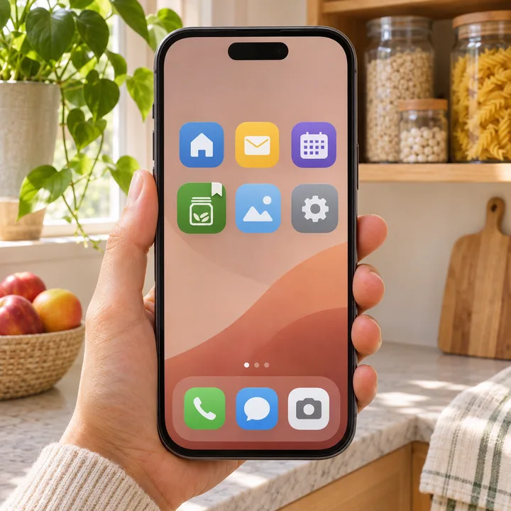

How to add a website to your iPhone or Android home screen
Create a home screen shortcut to open EatMeFirst with one tap.

On Android, open the browser menu
Open the website in a browser such as Chrome or Edge. In Chrome, tap the three-dot menu and choose the option to add it to your home screen. If you see “Create shortcut”, choose it and confirm. In Edge or another browser, look for a similar option. Recent versions of Chrome call this menu item “Install and create shortcut”.
On iPhone, use Share in Safari
Open the site in Safari. Tap Share directly or through the page menu, choose “Add to Home Screen”, then tap Add. Use the icon to get back to EatMeFirst, your pantry and your shopping list. If you change your browser or how you open the site, check that the data you expect is there. Inventory, lists and automatic saving are free. You can start in the browser without installing or signing up.